论文精读1：An Attention Free Transformer
1 Abstract
我们介绍了无注意力transformer(AFT)，这是Transformer的有效变体，消除了对点积自注意力的需要。在AFT层中，键和值首先与一组学习到的位置偏置组合在一起，其结果以element-wise的方式与查询相乘。
这个新操作的内存复杂度与上下文大小和特征维度都是线性的，这使得它兼容于大的输入和模型大小。我们还介绍了AFT-local和AFT-conv两种模型变体，它们在保持全局连通性的同时利用了局域性和空间权重共享的思想。
我们在两个自回归建模任务(CIFAR10和Enwik8)以及图像识别任务(ImageNet-1K分类)上进行了广泛的实验。实验表明，AFT在所有基准测试中都表现出具有竞争力的性能，同时提供了出色的效率。
2 Introduction
以Transformers为代表的自注意机制推动了各种机器学习问题的发展，包括语言理解和计算机视觉应用。与卷积神经网络(cnn)或循环神经网络(rnn)等经典模型架构不同，Transformer可以在序列中的每对元素之间进行直接交互，这使得它们在捕获长期依赖关系方面特别强大。
然而，Transformer需要很高的计算成本。这一挑战的原因是需要执行具有平方时间和空间复杂性的注意力操作，而不是上下文大小。
因为设计到矩阵乘法，所以时间复杂度为平方级别
这使得Transformer难以扩展到具有大上下文大小的输入。最近的许多工作都致力于解决Transformer的可伸缩性问题。这里的共同思想是近似全局注意力操作，使用的技术包括稀疏性、局域敏感散列、低秩分解、核近似等。
在本文中，我们提出了一个不使用或近似标准点积注意力的计算模块。因此，我们将我们的模型命名为无注意力Transformer(AFT)。与点积注意力类似，AFT由查询、键和值(Q、K、V)三个量的交互作用组成。不同之处在于，在AFT中，键和值（上下文）首先组合在一起加上一系列学习到的position biases。然后将查询与简化后的上下文结合起来，使用element-wise乘法，图2给出了一个说明。
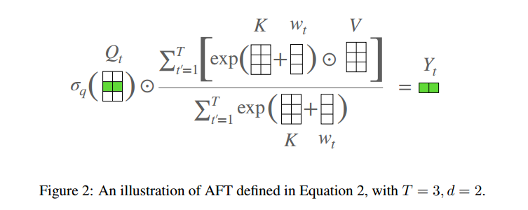
AFT保持上下文中任意两点之间的直接交互，这是点积注意力的主要优势。事实上，AFT可以被解释为在注意力头的数量与模型的特征维度相同的情况下计算注意力，而attention maps不需要明确计算(详见3.1节)。这导致内存复杂度线性w.r.t。输入和模型大小。
注意力图：Q与K进行点积得到的矩阵
在最近的“线性化注意力”工作中也发现了Q、K、V的重新排列计算顺序。不同之处在于，AFT以element-wise方式结合了K和V，而所有的线性注意力论文都依赖于矩阵点积。后一种方法导致复杂度与模型的特征维数成二次方，这对大模型尺寸不友好。与其他Transformer相比，AFT的复杂度分析见表1。
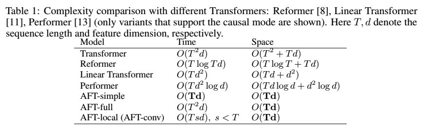
根据经验，我们观察到经过训练的Transformer往往表现出广泛的局部模式（见图1）。这促使我们提出AFT的两种变体：AFT-local和AFT-conf。
在AFT-local中，学习到的位置偏置被限制在局部区域，同时保持全局连通性。
在AFT-conv中通过强制空间权重共享进一步扩展了这一设计，有效地使其成为具有全局感受野的CNN的变体。
我们证明，局部约束不仅提供了更好的参数和计算效率，而且大大提高了模型在所有任务中的性能。
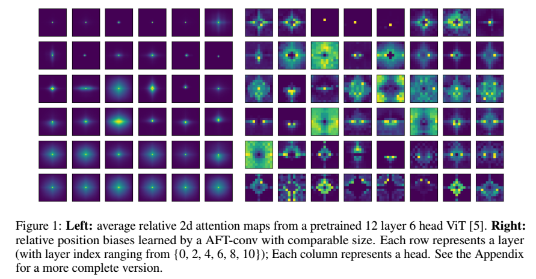
我们用AFT进行了图像自回归建模、字符级语言建模和图像分类任务的实验。我们证明，AFT提供了具有竞争力的性能，通常与标准变压器和其他变体相匹配或击败，同时提供了卓越的效率。
我们还对AFT的几种设计选择进行了广泛的消融研究，并讨论了其独特的特性，如与Transformer的兼容性、稀疏性和可变大小的输入。
3 Multi-Head Attention
Transformer的核心是Multi-Head Attention（MHA）操作。在自注意模式中，给定输入序列，头的数量为h，MHA对每个头执行缩放的点积注意，定义为：
其中，，是头的线性变换，是默认设置为softmax函数的非线性（应用于矩阵的每一行）。和分别是键和值的维度。MHA沿着通道维度连接个注意力头的输出，从而产生特征维度。除非另有说明，否则我们假设和。这意味着查询、键和值在每个头中都是相同的维度，并且输出维度与输入维度匹配。为什么要有这个假设？
4 Methodology
4.1 Attention Free Transformer
之前的注意力机制：
我们现在定义了Attention Free Transformer（AFT），它是MHA的插件替代品，无需更改Transformer的其他架构方面。给定输入，AFT首先将其线性变换为（这部分和之前的注意力机制计算相同），然后执行以下操作：
其中是元素乘积；是应用于查询非线性，默认为sigmoid；是学习到的成对位置偏差（见图2）。
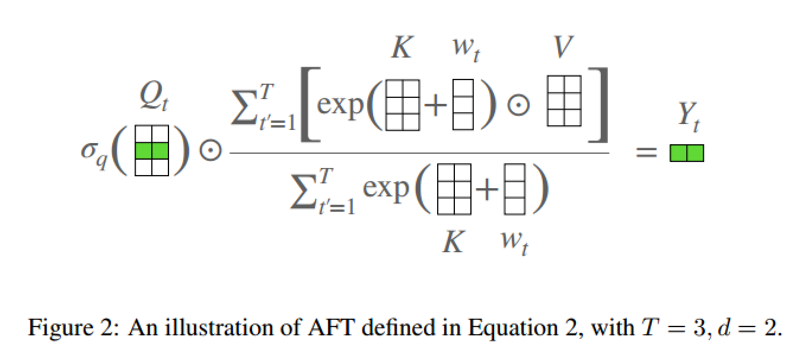
换句话说，对于每个目标位置，AFT计算的加权平均，其结果与具有element-wise乘法的相结合。特别地，权重仅由键和一组学习的成对位置偏差组成。这提供了直接的优势，即不需要计算和存储昂贵的注意力矩阵，同时像MHA那样保持查询和值之间的全局交互。
为了进一步了解AFT与MHA的关系，我们可以将上述公式改写为：
这里我们使用上标来索引矩阵的特征维度；表示向量的点积。在这种重新排列的形式中，我们能够再次用注意力来表达AFT。
具体来说，对于每个位置，我们对每个维度都有一个注意力向量，由组成。换句话说，AFT可以被解释为用与特征维度一样多的头来执行隐含注意力，其中注意力矩阵采用因式分解形式。
4.2 AFT 变体
4.2.1 AFT-Full
我们将上述公式中定义的AFT的基本版本表示为AFT-Full。
4.2.2 AFT-Local
在许多应用中，局部性是一种重要的归纳偏置，CNNs和最近Transformer的相关工作已经利用了这一点。此外，我们发现经过训练的标准Transformer往往表现出广泛的局部注意力模式。具体地说，我们可视化了ImagenetNet预训练的视觉转换器（ViT），它由12层组成，每个层有6个头。
为了可视化，我们忽略分类标记，并将每一层的注意力张量重塑为6×196×196（ViT的特征图的空间大小为14×14）。然后，我们从ImageNet验证集中采样了256幅图像。对于每一层和每一个头，我们计算查询位置和图像的平均相对二维关注度。这导致了一组大小为12×6×27×273的注意力图。
在图1中展示了每2层的注意力（完整可视化见附录）。我们看到，相对注意力图表现出强烈的局部性（如清晰度所示），尤其是在较低的层中。这激发了AFT的一种变体，称为AFT-local，其中我们只在局部应用一组学习到的相对位置偏差：
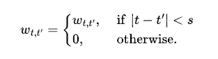
这里是局部窗口大小。AFT-local提供了进一步的计算节省，包括参数数量和时间/空间复杂性。注意，与local Transformer不同，无论窗口大小s如何，AFT-local都保持全局连通性。在实验中，我们验证了这种设计选择的有效性。
4.2.3 AFT-Simple
AFT-local的一种极端形式是当（窗口为0）时，即没有学习到位置偏差。这就产生了一个极其简单的AFT版本，其中我们有：
在这个版本中，上下文缩减被进一步简化为元素操作和全局池。AFT-simple类似于线性化注意力，其公式为：
然而，很容易看出，AFT-simple完全消除了点积运算的需要，这导致时间复杂度为而不是。
4.2.4 AFT-Conv
我们还可以进一步扩展局部性的概念，将空间权重共享（即卷积）纳入其中。这种变体与视觉任务特别相关，因为通常需要将预训练的模型扩展到可变大小的输入。具体来说，我们让的值仅取决于和，即相对于给定空间网格（1d或2d）的相对位置。与CNNs类似，我们也可以学习多组位置偏差（我们重用heads的概念作为参考）。为了说明#parameters随着#heads的增加而增长，我们采用了一种设计选择来将K的维度与#heads联系起来。这使得AFT可修改为依赖于深度可分离卷积、全局池和元素操作的实现。
我们现在展示了具有1d输入的AFT-conv的示例，2d和3d输入可以类似地导出。我们将模型配置表示为AFT-conv-h-s，其中是头的数量，是1d局部窗口大小。我们现在有，，。对于每个头部，我们有：
这里、、、；
是深度可分离的一维卷积运算，其中卷积滤波器在通道维度上共享。请注意，上述公式可以很容易地理解为具有：
- 全局连接性
- 非负卷积权重
- 复杂的除法/乘法门控机制的专用卷积层
通过实验证明，所有三个方面都对 AFT-conv的性能有显着贡献。
4.2.5 参数化
参数化。根据经验，我们发现正确参数化位置偏差很重要。对于AFT-full和AFT-local，我们采用 𝑤的因式分解形式：
其中 𝑑’是一个小的嵌入维度（例如 128）。这种简单的分解不仅大大减少了参数数量（与），而且还根据经验提高了模型在训练和测试中的性能。
对于AFT-conv，分解技巧不适用。相反，采用简单的重新参数化，对于每个头，我们让
其中是可学习的增益和偏置参数，均初始化为0。
5 Related Work
自从Transformer被引入以来，已经有很多尝试来解决架构中低效的主要来源，即注意力操作的平方成本。改进此操作可以实现更大的上下文大小和更高效的实现。有关高效Transformer的最新全面调查，请参阅[16]。
5.1 近似点积
近似点积提出用投影的内积来近似指数核，这导致了复杂性为的线性化注意力操作。
然而，这些模型的项使其难以随模型大小进行缩放，这对AFT来说不是问题。Reformers[8]将LSH作为点积的近似值，其中AFT完全消除了它。
5.2 稀疏注意力
稀疏Transformer[7]和图像Transformer[17]提出使用固定的稀疏或局部上下文模式。视觉任务中的注意力模型（通常与卷积相结合）使用图像结构来帮助手工制作相关的空间模式来参与[18-22]。AFT局部性也借用了局部性的思想，但我们把它看作是一种偏见，而不是硬约束。这允许AFT-local/AFT-conv利用完整的上下文，而不是仅依赖于子集。
5.3 上下文压缩
其他方法试图学习上下文模式。Adaptive-Span Transformers[23]学习每个注意力头的范围。[24]使用聚类仅在同一聚类内的元素子集上计算点积注意力。
Linformer[10]通过使用线性层压缩键和值来减少上下文的长度。压缩变换器[9]计算并更新输入序列中足够靠后的输入的简化表示，并处理这些压缩表示。AFT在很大程度上是对这些方法的补充，因为我们的重点是从操作层面提高任何给定序列的复杂性。
5.4 消除点积注意力
其他方法不是限制比较的次数，而是改变用于计算注意力的运算。合成器[12]使用从输入预测的注意力权重，而不是从点积交互中导出的。[25]中引入的LightConv模块提出用动态轻量级深度卷积代替点积自注意，其中权重在时间维度上进行归一化。Sinkhorn Transformer [26]使用可微分排序操作来识别在原始序列顺序中可能不是局部的相关比较。AFT沿着这条线提供了一种不同的方法，同时强调了强大的实证性能和效率。
5.5 MLPs for vision
并行工作[27，28]探讨了在视觉任务中使用MLP代替注意力操作。虽然AFT可以用类似的方式查看，但它也配备了更复杂的门控机制。特别是，值的权重由关键和位置偏差组成，这些偏差被归一化为非负值（类似于注意力）。
AFT将成为现有变压器的插件模块，无需任何架构更改和额外调整。此外，AFT-conv继承了CNNs的宝贵特性，使其能够实现卓越的参数效率、强大的性能以及处理可变大小输入的能力。
6 Experiments
我们在三个任务上进行了实验：图像自回归建模（第6.1节）、字符级语言建模（第6.2节）和图像分类（第6.3节）。前两个基准使用AFT的因果模型（或解码器模型），而最后一个基准使用编码模型。所有实验都是以即插即用的方式设计的，其中我们获得了特定任务的基线Transformer架构，并将注意力模块替换为AFT模块。初始化、学习速率调度等超参数也直接继承自Transformer对应方法。
除非另有说明，否则所有实验都是在8×V100 GPU机器上进行的。
6.1 图像自回归建模
6.1.1 CIFAR-10数据集
CIFAR-10 和 CIFAR-100 是 8000 万个微小图像数据集的标记子集。它们由 Alex Krizhevsky、Vinod Nair 和 Geoffrey Hinton 收集。
CIFAR-10数据集由 10 个类别的 60000 个32x32彩色图像组成，每个类别有 6000 个图像。有 50000 张训练图像和 10000 张测试图像。
数据集分为5个训练批次和1个测试批次，每个批次有10000张图像。测试批次包含从每个类别中随机选择的 1000 张图像。训练批次以随机顺序包含剩余的图像，但某些训练批次可能包含来自一个类的图像多于另一个类的图像。在它们之间，训练批次正好包含来自每个类的 5000 张图像。
以下是数据集中的类，以及每个类的 10 张随机图像：
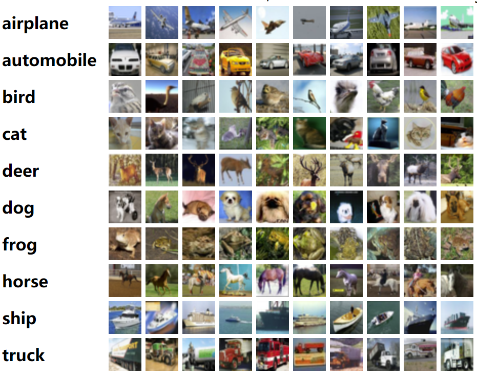
这些类是完全相互排斥的。汽车和卡车之间没有重叠。“汽车”包括轿车、SUV等。“卡车”仅包括大型卡车。两者都不包括皮卡车。
6.1.2 实验部分
在我们的第一组实验中，我们通过最小化负对数似然（NLL）来考虑图像自回归建模的问题。与[17]类似，我们将RGB图像表示为长度为H×W×3的序列，其中H、W分别为高度和宽度。每个子像素被表示为256路离散变量。我们使用CIFAR-10作为基准数据集。
我们的参考Transformer设计在很大程度上遵循[4]的设计，其中Transformer块由具有残差连接的注意力层（在我们的情况下为AFT层）和具有残差连接（前馈维度乘数设置为4）的2层MLP组成。层规范化（LN）[29]以“预先”的方式应用。我们采用学习的位置嵌入，并在RGB上使用一组共享的标记嵌入和预测头。我们在本实验中使用带有因子化参数化的AFT局部。因子分解的隐藏维度为64，u，v用初始化；局部（1d）窗口大小s为256。
我们使用AdamW[30]，并遵循[1]中的标准热身学习率时间表。我们使用的初始学习率，将0.1的权重衰减应用于所有线性变换权重，并使用0.1的丢弃率。我们采用简单的数据扩充。在训练过程中，我们首先随机水平翻转每个图像，然后从其所有子像素中添加或减去范围为[-10, 10]的值，并将得到的像素值剪裁为[0255]。我们使用交叉熵损失，对于200个训练时期，默认批量大小为128。
与现有技术相比
CIFAR10是图像自回归建模的一个拥挤的基准，我们将其与一些有竞争力的基线进行了比较，如表2所示。注意，CIFAR10具有3072的展开序列长度，这已经无法训练具有合理尺寸的完整变压器。对于标准的Transformer模型，我们采用了两种配置（L=12，d=512，h=4和L=24，d=256，h=2），批量大小为32，这是我们在8xV100GPU节点上可以容纳的最大的一个。另一个基线是Image Transformer[17]，它将注意力限制在大小为256的local2d窗口上。我们还将其与稀疏变换器[7]进行了比较，后者限制了对上下文元素的预先指定的稀疏子集的关注。
表2：
CIFAR-10上的NLL结果，按bits/dim评估，越低越好。速度和内存是在训练期间测量的，8个V100GPU的批量大小为32。AFT在此设置中实现了最先进的结果，与标准Transformer、Sparse Transformer[7]和Image Transformer[17]相比，写入速度和内存显著提高。
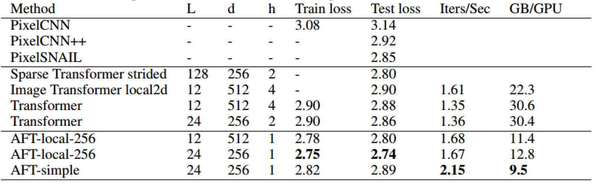
从表2中，我们可以看到AFT local优于所有Transformer baseline。我们还观察到，更深但更窄的架构比浅但宽的基线更有效。在这种情况下，我们最好的模型在CIFAR10上也达到了最先进的结果，优于更大的稀疏变压器模型。在效率方面，我们在8 个V100GPU节点上将Transformer变体与AFT进行了基准测试。我们所有的变体都比标准Transformer和Image Transformer更快，同时只消耗一半的内存。也许令人惊讶的是，AFT simple也实现了非常有竞争力的性能，甚至超过了Image Transformer，同时提供了出色的速度和内存效率。
因子分解的影响。我们还提供了关于AFT因子化参数化的消融实验。为了做到这一点，我们用一个初始参数化的w重新训练了表2中性能最好的模型（即AFT-cal-256，L=24，d=256），用初始化。从表3中，我们可以看出，因子化版本不仅显著节省了参数，而且提高了模型在训练和测试方面的性能。
6.1.2.2 Factorized的影响
我们还提供了关于AFT因子化参数化作用的消融。为了做到这一点，我们用一个初始参数化的重新训练了表2中性能最好的模型（即AFT-cal-256，L=24，d=256），用初始化。从表3中，我们可以看出，因子化版本不仅显著节省了参数，而且提高了模型在训练和测试方面的性能。
表3：通过对CIFAR-10的自回归建模评估的位置偏差因子化参数化的影响
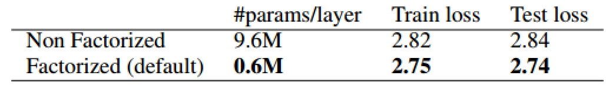
6.2 语言建模
6.2.1 补充
语言建模是预测文档中下一个单词或字符的任务。此技术可用于训练语言模型，这些模型可以进一步应用于广泛的自然语言任务，如文本生成、文本分类和问答。
模型的语言建模能力是使用交叉熵和困惑度来衡量的。一些用于评估语言建模的数据集包括 WikiText-103、One Billion Word、Text8、C4、The Pile 等。
6.2.2 Enwik8数据集
Enwik8数据集是 2006 年 3 月 3 日英语维基百科 XML 转储的前 100,000,000 （100M）字节，通常用于衡量模型压缩数据的能力。
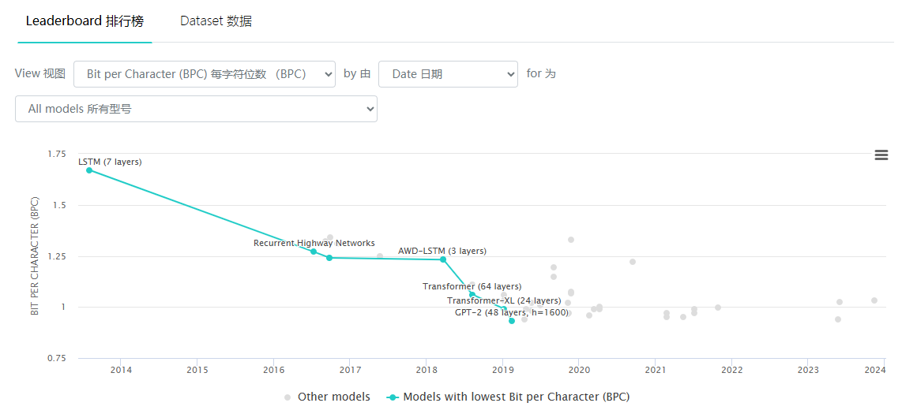
6.2.3 实验部分
我们将AFT应用于Enwik8[31]上的字符级语言建模，这是另一个流行的自回归建模基准。我们遵循[32]中的标准预处理程序和训练/验证/测试拆分。我们的基础Transformer参考是一个12层512维8头架构，具有2048个前馈维度。对于第一组实验，我们使用1024的序列长度。我们的训练方案与之前的实验基本相同，只是我们将权重衰减增加到0.5，并以128的批量训练100个时期。我们评估窗口大小为32和的AFT-local。
我们还比较了几种有效的Transformer模型，即Reformer[8]、Synthesizer[12]、Linear Transformer[11]和Performer[13]。
表4：
Enwik8结果，以每字符比特数（bpc）为单位测量，越低越好。比较的基线是Reformer[8]、Synthesizer[12]（其性能最好的密集版本）、Linear Transformer[11]和Performer[13]。L、d、h、T分别表示块的数量（深度）、特征的尺寸、头的数量和序列长度
速度和内存是在训练时间内测量的，在8个V100GPU节点上的批量大小为128。Linear Transformer和Performer都是用定制的CUDA内核（github.com/idiap/fast-transformers ）实现的，所有其他模型都是在原生Pytorch中实现的
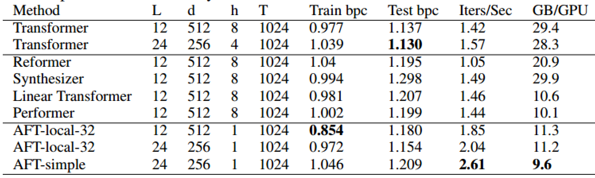
从表4中，我们可以看到，在基本L=12，d=512架构的情况下，AFT实现了最低的每字符训练比特bpc，这是高模型容量的指标。它的测试性能比基本的Transformer稍差，但优于所有其他Transformer变体。AFT更深、更窄的体系结构在参数、速度、内存和性能方面取得了最佳平衡。它的测试bpc距离完整的Transformer只有0.024，而只消耗了三分之一的内存，并提供了44%的加速。AFT simple再次展示了具有竞争力的性能和卓越的效率。
6.2.3.1 窗口大小
为了验证局部窗口大小的影响，我们对L=24，d=256架构进行了额外的实验，修复了所有问题，但改变了局部窗口大小。我们在表5中显示了结果，其中我们看到训练和测试bpc都形成了相对于窗口大小的U形，其中32个实现了最佳性能。这进一步证实了局部性确实是跨任务的有效归纳偏差。
表5：训练和测试bpcw.r.t.AFT本地窗口大小
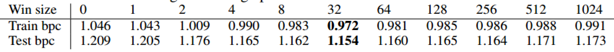
6.2.3.2 较长的序列大小
我们还对AFT适应较长序列大小的能力感兴趣。由于其简单性，人们甚至可能预期随着T的增加性能会下降。为此，我们训练了AFT–local-32，L=24，d=256模型，T分别增加到2048和4096。结果如表6所示。我们看到，随着T的增加，AFT能够利用更大的序列大小，并持续降低训练和测试损失。
表6：Enwik8上的T增加。随着T的增加，训练和测试损失都有所改善
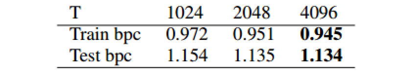
6.3 图像分类
6.3.1 Imagenet-1K数据集
ImageNet数据是CV领域非常出名的数据集，ISLVRC竞赛使用的数据集是轻量版的ImageNet数据集。ISLVRC2012是非常出名的一个数据集，在很多CV领域的论文，都会使用这个数据集对自己的模型进行测试。
ImageNet是一个计算机视觉系统识别项目，是目前世界上图像识别最大的数据库。是美国斯坦福的计算机科学家，模拟人类的识别系统建立的。能够从图片中识别物体。ImageNet是一个非常有前景的研究项目，未来用在机器人身上，就可以直接辨认物品和人了。超过1400万的图像URL被ImageNet手动注释，以指示图片中的对象；
在至少一百万张图像中，还提供了边界框。ImageNet包含2万多个类别，一个典型的类别，如“气球”或“草莓”，每个类包含数百张图像。
在一些论文中，有的人会将这个数据叫成ImageNet-1K 或者ISLVRC2012，两者是一样的。1K代表的是1000个类别。用这个数据测试模型结构是很方便的。有几点原因：
- 很多的论文都使用了此数据集，跟其他模型比较时，可以直接引用结果
ImageNet的评价指标是固定的，大家都使用top1、top5等- 可以直接看出你修改的模型结构到底有没有提高
6.3.2 实验部分
然后，我们测试了AFT的non-causal版本，重点是图像分类任务。我们采用了Vision Transformer架构[5]，并在Imagenet-1K分类数据集上进行了实验。我们采用了DeiT[6]中的训练设置和超参数（批量大小、数据扩充、正则化和学习率调度）。
简言之，ViT将图像分割为16×16个不重叠的块，然后将具有共享权重的每个块线性投影到令牌嵌入的等价性。学习的类标记被附加到所得到的表示，从而产生长度的序列。线性分类头被附加到最终层的类标记以获得最终输出。有关型号配置的更多详细信息，请参见[5]。所有实验都是在ImageNet-1K数据集上进行的，没有使用额外的数据。
由于该任务中的序列大小相对较小（对于224×224的输入大小，T=197），我们首先用AFT-full进行实验。因子分解后的位置偏移的隐藏维度被设置为。
此外，我们还对AFT-conf进行了实验。在这种设置中，我们还取消了位置嵌入和类标记的使用，并在最终层的输出后应用全局平均池，然后将其输入到分类线性层。这种修改不仅简化了模型设计，而且使AFT-conv完全卷积，这是Transformer及其变体所没有的。
我们比较了两种baseline的Transformer配置，分别为“tiny”和“small”配置。我们还考虑了Lambda Networks[15]，它与线性化的注意力工作线密切相关。与AFT-conv类似，我们删除了类标记，转而应用全局平均池。我们使用了其公共实现，并应用密钥投影维度的全上下文模式（此设置调用更快的线性实现）。我们还将BatchNorm应用于查询，如[15]所建议的密钥投影。
表7：
DeiT[6]的Transformer架构的Imagenet-1K分类结果，cropsize为224。速度和内存消耗是在V100GPU的推理模式下测量的，批量大小为256
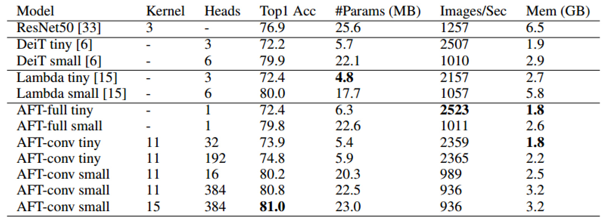
我们的结果如表7所示。我们首先看到，AFT-full在两种配置中都实现了与基线Transformer DeiT相当的性能，同时具有更好的内存占用和相似的速度。AFT-conv显著提高了两种配置的前1级精度（“tiny”和“small”分别提高了2%和1.1%的绝对精度），参数计数相似或更小。
与Lambda Networks相比，所有AFT变体都实现了相当或更好的精度，具有相当的速度和更小的内存占用。
6.3.2.1 可视化
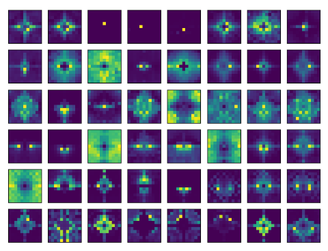
图1：具有可比规模的
AFT-conv学习到的相对位置偏差。每一行代表一个层（层索引范围为{0,2,4,6,8,10}）；每列代表一个标题。有关更完整的版本，请参阅附录。
我们还试图将AFT-conv学习到的位置偏差（精确地说是）可视化，如图1所示。请注意，出现了有趣的局部对称稀疏模式。我们在附录中表明，我们可以正则化位置偏差以实现更高的稀疏性。我们还展示了AFT-conv的一个极端版本，其中每个头部都分配了一个非零上下文点，同时仍然保持良好的准确性。这有效地将卷积转换为索引。
6.3.2.2 可变大小输入
AFT-conv是完全卷积的，这意味着它可以处理与训练中不同的输入大小。我们在384个更大的crop size上测试了AFT-conv模型（表7的最后一行，用crop size为224进行训练）。与最初的81.0相比，这提高了81.6的精度。这使得AFT-conv非常适合预训练微调工作流程，正如Vision任务中经常看到的那样。
6.3.2.3 与Transformer的兼容性
尽管AFT不是为了直接近似MHA而设计的，但它们确实有相当大的相似性，因为在两个模型中，值向量都是用学习到的非负权重聚合的。我们假设一个模型学习到的表征可以转移到另一个模型。为了测试这一点，我们获得了一个crop size为384的预训练DeiT base模型。然后，我们通过用DeiT模型的权重初始化AFT-conv来训练它，不包括位置嵌入、类标记、键和查询投影。我们使用64的批处理大小，训练模型100个迭代周期。作为控制，我们还为相同数量的epoch训练一个随机初始化的AFT-conv。结果如表8所示。有趣的是，我们看到AFT-conv的微调版本比随机初始化版本的精度高得多。由此产生的模型也比原始的DeiT模型更准确、更快、更节省内存。
表8：根据384×384 crops的预训练
DeiT base，对100个epochs的AFT-conv进行微调。“ft”和“rand”分别代表微调和随机初始化。
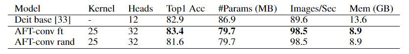
6.3.2.4 全局连通性
AFT-conv（以及AFT-local）保持全局连接，而不管本地kernel大小如何，这与稀疏和局部注意力工作不同。为了看到这种设计的好处，我们训练了一个AFT-conv的退化变体，其中我们修改了方程4，在局部窗口外为分配−∞值（求幂后为零权重）。当使用卷积核大小为7评估此基线时，它给出了79.9的Top 1精度，而默认AFT-conv在相同设置下的精度为80.8，下降了0.9%（我们在各种配置中始终观察到相同的趋势）。我们假设这项技术也可以扩展到局部和稀疏的变形金刚，但将作为未来的工作。
7 Conclusions
我们推出了无注意力Transformer，它以高效的新操作取代了点积注意力Transformer。我们在一组标准基准上展示了强大的结果以及卓越的效率。我们相信，我们的模型为类似Transformer的模型打开了一个新的设计空间，并将在需要自注意力的各个领域产生影响。
8 Additional Ablations
8.1 其他的消融实验
我们对ImageNet-1K分类设置进行了更多实验。
的参数化：我们首先验证了AFT全因子化参数化的重要性。如表9所示，AFT full的非因子化参数化比因子化版本的训练和测试性能更差。
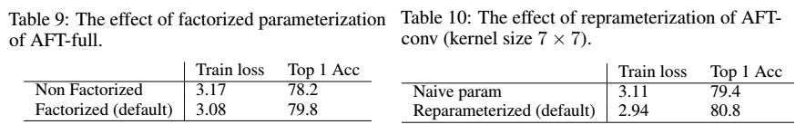
的重参数化：对于AFT-conv，默认应用第3.2节中所述的重新参数化。我们验证了该设计有效地提高了模型的性能，如表10所示。
卷积核的大小：我们还尝试了基于AFT convsmall（384个头）改变局部窗口大小。结果如表11所示。请注意，即使内核大小非常小，为3×3，AFT-conv也能实现与Deit参考相当的性能。
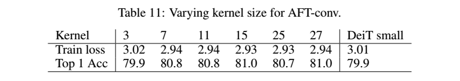
query的贡献：查询项对AFT的计算贡献很小，但它对AFT性能的贡献很大。我们用AFT-conv（384个头，内核大小为11×11和15×15）进行了额外的实验，在那里我们删除了查询词。结果如表12所示。
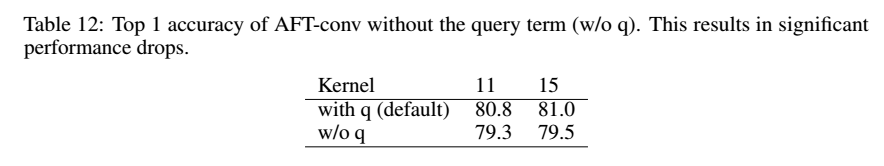
key的可视化：key在AFT中起着核心作用，因为它们为有效的上下文缩减提供了依赖于内容的重新加权。为了了解它们的行为，我们在ImageNet-1K验证集中的随机采样图像上可视化了AFT-conv模型的特征图，如图9、10、11、12所示。有趣的是，我们看到随着层级别的升高，密钥逐渐演变为“对象检测器”。
图9、10、11、12顶部：来自
ImageNet-1K验证集的示例图像
底部：AFT-conv中key的可视化，每行对应一个层，每列对应一个头部
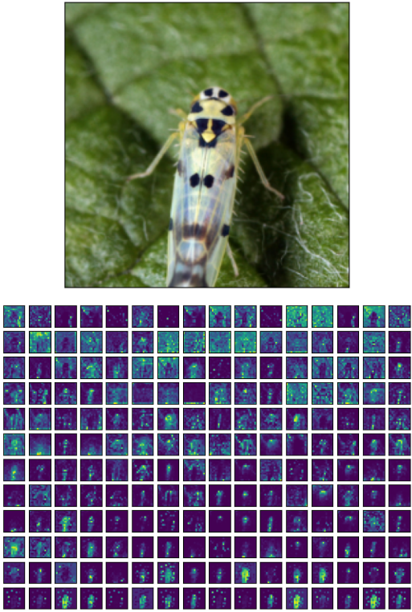
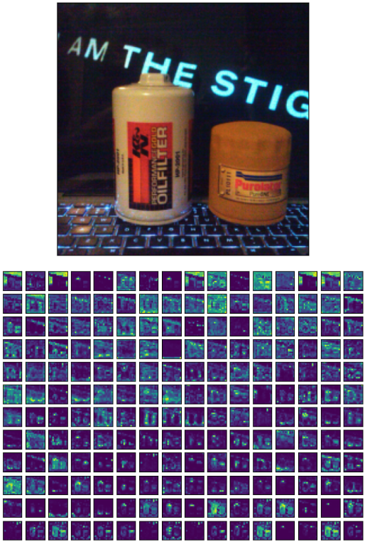

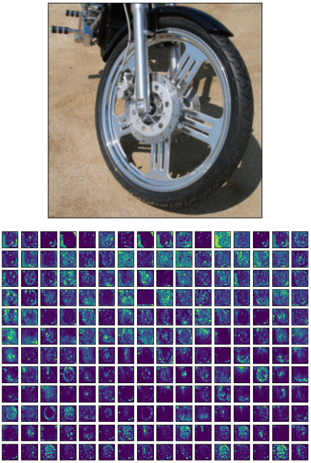
 微信
微信 支付宝
支付宝